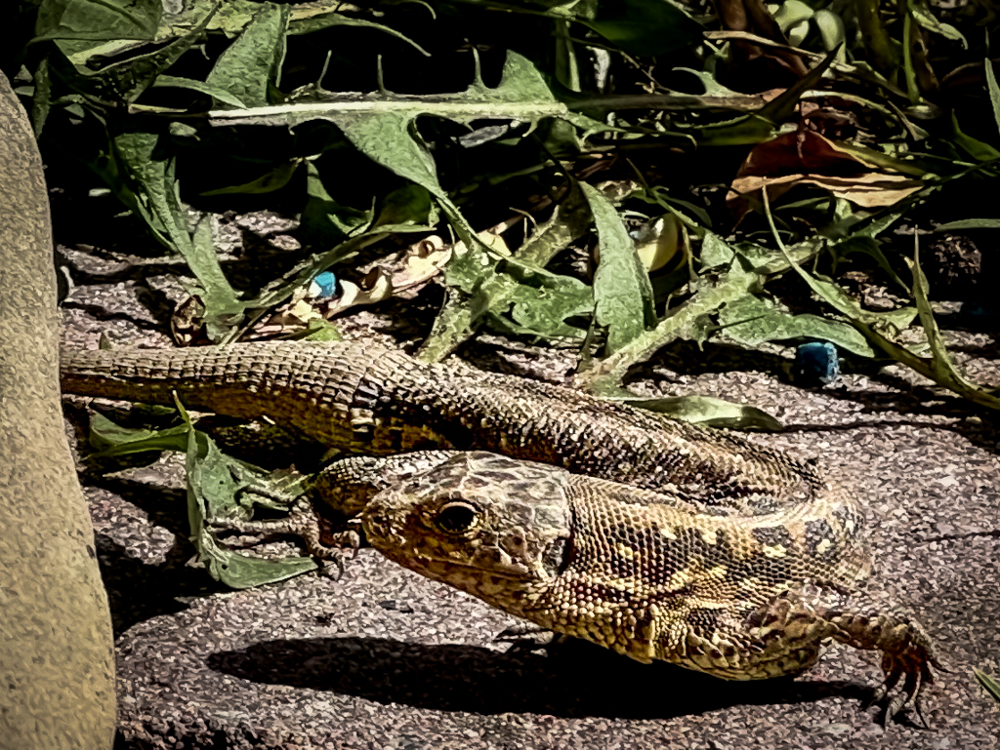
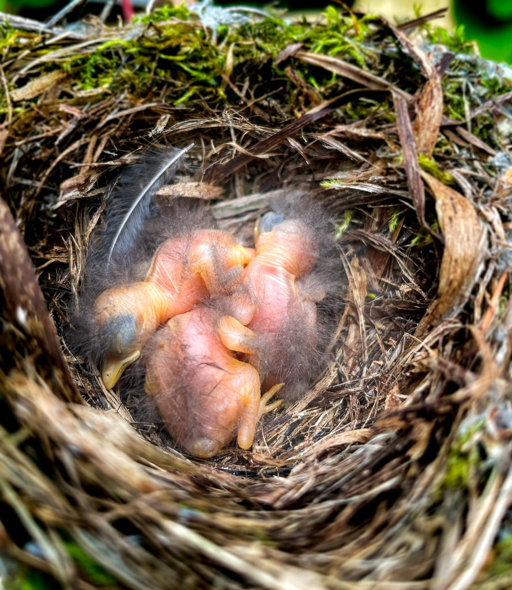
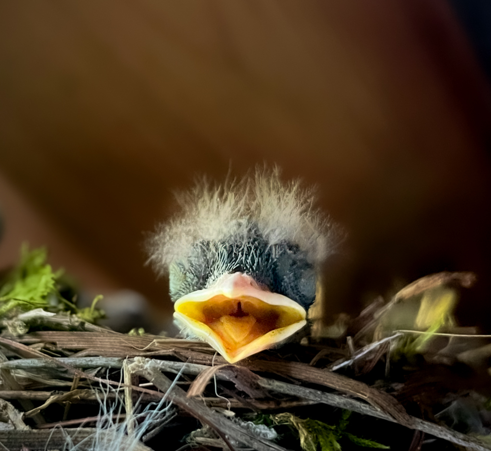
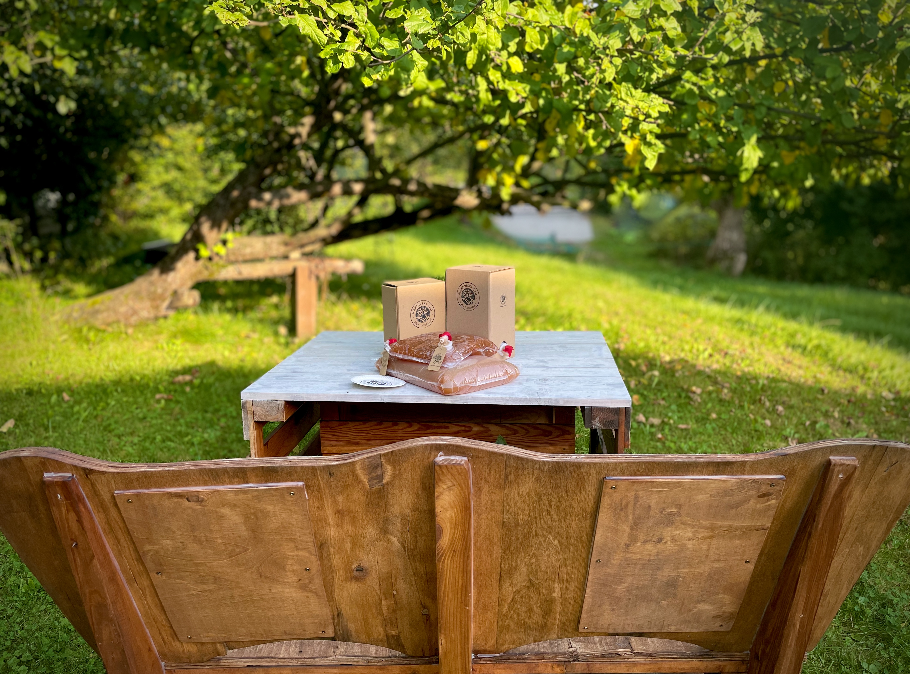
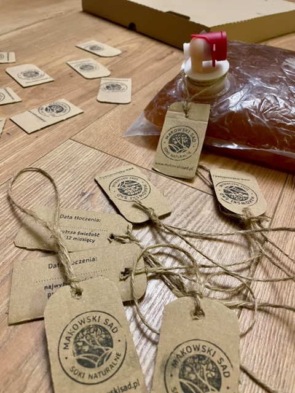

Ekologia w Makowskim Sadzie
Najlepsze soki powstają w harmonii z naturą.
Z dala od ruchliwych dróg w sadzie znajduje się nasz dom. Mieszkając pośród drzew, nie chcemy obcować ze środkami chemicznymi służącymi do usprawniania uprawy.
Nasze kilkudziesięcioletnie jabłonie rosną w naturalny sposób bez przyspieszaczy wzrostu i są organicznie odporne. Nasz sad to mikroekosystem, gdzie kazde drzewo i owad ma swoją rolę. Nie chcemy tego zaburzać stosując "chemię", stosujemy permakulturę.
Jabłonie przycinamy jesienią, usuwamy pasożyty, wszystko ręcznie.
Dbamy o rónorodność sadu tworząc środowisko, w którym różni goście są mile widziani.



Współpracujemy z lokalnymi biznesami
Leśnicy i myśliwi
Nasze jabłka też idealnie nadają się do karmienia zwierząt leśnych. Dzikie zwierzątka zostają w lesie i nie wchodzą w szkodę :)
Pozostałe odpady oddajemy do lokalnego Punktu Selektywnej Zbiórki Odpadów Komunalnych
Soki są dystrybuowane w workach PET z kranikiem. Cały proces jest zoptymalizowany przez tłocznię.
Etykiety robimy własnoręcznie wycinając z kartonów po pizzy lub zuzytych pudeł. Przywiązujemy je najprostszym sznurkiem.
Opcjonalnie, soki są dodatkowo opakowane w prosty karton umozliwiający łatwe nalewanie oraz zabezpieczający bukłak przed przypadkowym uszkodzeniem.
Wszystkie napisy i logo są umieszczane poprzez ostemplowanie - w ten sposób nie tworzymy dodatkowych etykiet, nie używamy naklejek.


W ten sposób kartony mogą być wielokrotnie uzywane - wystarczy uzupełniać "wkład", do czego gorąco zachęcamy. Etykietki mozna utylizować jako papier, podobnie jak samo pudełko, jak się juz zuzyje. Worek PET, po całkowitym opróżnieniu, można wyrzucic do plastików. Zalecamy odciąć wcześniej kranik - umozliwia to wykorzystanie calosci soku i ułatwia sortowanie